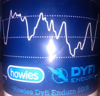

Dyfi enduro was yesterday so Ben and I decided that a bit of downhilling was in order,
had enough of riding uphill. We took the morning fairly easy and chilled before heading over
at around lunch time. We started out by hitting the top of the main line a couple ...

This weekend marked the annual Dyfi Enduro event. A couple of the old abermtb group were coming
back for this and it was shipping up to be a good weekend of riding. Ben was, as usual, staying with
me and we arranged to meet Joe, Stu, Paul and Andy over ...

For the past few xc rides I've not really been feeling the downhills. They've felt
slow and forced to try make any speed on them, it's been fine over Clarach but for
some reason Nant and even the Dyfi just haven't felt right. Last night that ...
Today Dan, Gaz and I met up with the some of the locals to do some repairs
to a couple of the Dyfi enduro descents. We split into 2 groups and our group
went off to the top of the world cup descent to fill in a bit of a ...

The Dyfi Enduro is 2 weeks today so today marked the dyfi pre-ride where a group of
us ride the potential route. Dan turned up at my truck at around 9am so we packed up
and got on the way, planning to arrive early so that I could change wheel ...

Finally made it over to Myherin with the Ystwyth guys, well just Dave Reed. It's
pretty much everything that Dave told me that it would be but it still didn't fail
to surprise me with just how steep parts are. We started out with a bit of a ...
«
Page 2 / 2